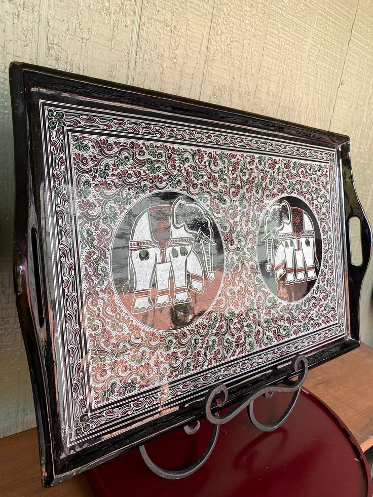
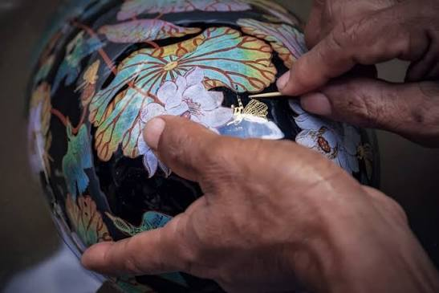
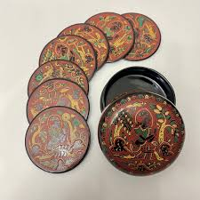

Etched Lacquerware, also known as Kanyut Yun, is one of the most exquisite forms of Myanmar traditional art. It is characterized by its incredibly detailed patterns that are hand-engraved onto the lacquer surface and then filled with vibrant colors. The most famous sub-type is "Za-Yun," known for its lace-like, delicate craftsmanship.

The process begins by using a fine iron stylus to engrave intricate designs onto the hardened black resin base. Next, natural pigments such as cinnabar (red) or orpiment (yellow) are inlaid into these grooves. Finally, the surface is polished with water and stone to remove excess paint, leaving behind only the colorful, detailed patterns embedded in the lines.

The primary hub for authentic Etched Lacquerware is Bagan, the ancient city of Myanmar, where master artisans have preserved this craft for generations. Visitors can find high-quality pieces in local workshops and galleries throughout Bagan and Nyaung-U, as well as in traditional craft souvenir shops in major cities like Mandalay and Yangon.